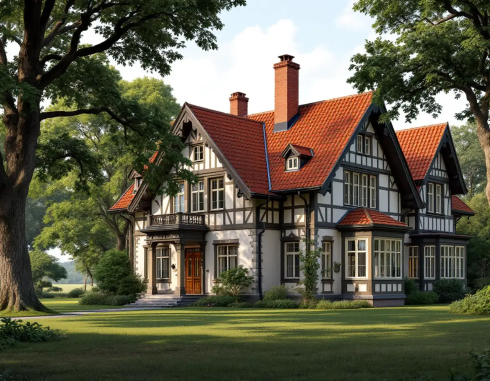
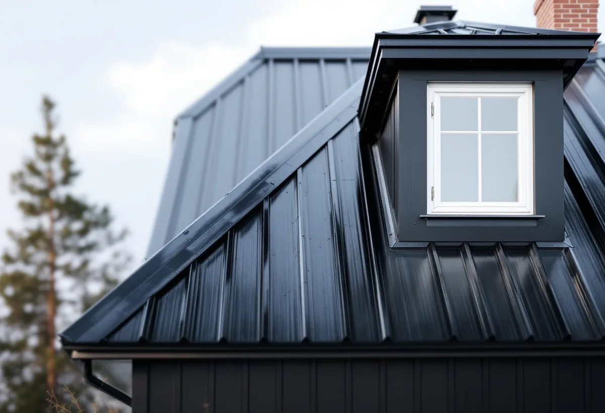

Kolla kulturmiljökartan
Vi ser tillsammans om fastigheten ligger i en värdekärna, i riksintresset eller i ett av egnahemsområdena.
I Danderyd betyder en takrenovering oftast att ett gammalt tegel- eller plåttak läggs om med nytt underlag, medan utseendet behålls. Stora delar av Djursholm och Stocksund är riksintresse för kulturmiljövården, och där gäller enligt kommunen alltid lovplikt för ändringar – så arbetet planeras utifrån det som redan finns på taket.

Djursholm grundades 1889 och beskrivs i kommunens översiktsplan som landets första villastad anlagd som förort. Bebyggelsen speglar framför allt perioden 1890–1930, med stora villor på naturtomter där stilen går från de första enkla trävillorna via nationalromantik och jugend till funktionalism. Stocksund växte fram parallellt: Stockby AB bildades 1888 och sålde sin första tomt 1890, och villorna i Mörbyområdet ritades till stor del av stadsarkitekten D Melin i nationalromantik och senjugend.
Sedan 1987 är Djursholms villastad och Stocksunds villastad riksintressen för kulturmiljövården. Kommunen har pekat ut elva värdekärnor inom dem, till exempel Svalnäs, Urdavägen, Vendevägen, Skandiavägen, Gamla Djursholm, Ringen/Skogsliden och Vasavägen.
Enebyberg har en annan karaktär. Kommunens riktlinjer från 2024 beskriver kommundelen som tydliga årsringar med bebyggelse från 1700-talet till 1970-talet och pekar ut områden med egnahem, både i Enebyberg och i Klingsta. Även Djursholm har ett utpekat egnahemsområde.

Kommunens beskrivning av värdekärnorna är i praktiken en karta över taken. På Ringen/Skogsliden och Vasavägen är tvåkupigt rött lertegel vanligast, på Vendevägen ligger rött lertegel på brutna sadeltak med svängt utfall, och på Hildingavägen/Stenbocksvägen är sadeltaken oftast täckta med rött lertegel. I Svalnäs, på Skandiavägen och i kvarteren Midgård och Odinslund förekommer både falsad plåt och lertegel.
Urdavägen sticker ut. Det är kommunens enda större bevarade område med tidig funktionalism, och taken är framför allt pulpettak med falsad plåt. Där handlar en renovering om plåtens skick, falsar och infästning snarare än om pannor.
Det som brukar vara slut på de här taken är sällan teglet. Lertegel kan ligga länge, medan underlagspapp, läkt och plåtdetaljer kring torn, kupor, burspråk och skorstenar har kortare livslängd. Läs mer i tegel, betong eller plåt.
Djursholm ligger vid Stora och Lilla Värtan, och Stocksund vid Lilla Värtan och Stocksundet. Terrängen är kuperad i båda: i Djursholm placerades många villor högt i terrängen, och Stocksunds vattentorn står på en höjd på omkring 45 meter. Hus på höjder och vid vattnet tar mer vind, vilket märks på nockar, vindskivor och plåt.
Tomterna är stora och gröna. Kommunen beskriver naturtomter, rik växtlighet och i flera områden gamla fruktträd, och riktlinjerna säger att äldre uppvuxna träd ska tas hänsyn till. För taket innebär det skuggiga takfall, löv i rännorna och mossa på norrsidan. Se taktvätt och mossa på taket.
Sedan 1 december 2025 behövs normalt inget bygglov för att byta taktäckningsmaterial eller kulör på ett en- eller tvåbostadshus. Undantag är hus med skyddsbestämmelser i detaljplan eller områdesbestämmelser, särskilt värdefulla byggnader enligt 8 kap. 13 § PBL och planer med utökad lovplikt, enligt Boverket. Ändras takets form eller höjd krävs lov.
Danderyd är tydligt på den punkten. På sidan om nya regler för bygglov skriver kommunen att det inom kulturhistoriskt värdefulla områden och riksintressen för kulturmiljövården alltid gäller lovplikt, och att du kan kontrollera din fastighet i kommunens kulturmiljökarta. Kommunen arbetar också med detaljplaner för de nio värdekärnorna i Djursholm.
En omläggning där samma tegel läggs tillbaka och taket ser likadant ut ändrar inte husets utseende. Vill du byta material, kulör eller detaljer i ett utpekat område behöver det däremot prövas, och kommunen kan begära antikvariskt underlag. Vi tar fram beskrivning och bilder av taket som underlag. Läs mer om bygglov vid takbyte.
I Enebyberg är husen ofta mindre än i Djursholm men lika känsliga för förändringar. För egnahemsområdet säger kommunens riktlinjer att byggnadernas ursprungliga arkitektoniska uttryck ska bevaras och vara vägledande vid om- och tillbyggnad, och att tidstypisk färgsättning ska vara vägledande vid ommålning.
För ett egnahemstak betyder det att takform, takfot och material bör behållas även när underlaget byts. Kupor och skorstenar har ofta enkla plåtdetaljer som vi gör om i samma utförande i stället för att byta till moderna standardprofiler.
En typisk takrenovering i Djursholm börjar med att teglet tas ner och sorteras. Hela pannor sparas, och vi kompletterar med likvärdigt tvåkupigt eller enkupigt tegel så att taket får samma yta. Därefter läggs ny underlagspapp och ny läkt, och råspont som tagit fukt byts.
Brutna tak, torn och burspråk har många ränndalar och vinklar, och det är där läckor brukar börja. Ränndalsplåt, fotplåt, vindskivor och skorstensbeslag görs om, gärna i samma metall som tidigare. På plåttaken i Urdavägen och Svalnäs kan en renovering i stället vara att byta skadade plåtpartier och måla om, se takmålning.
Vi går också igenom hängrännor och stuprör och ventilationen vid takfoten, så att vinden hålls torr. Mer om hur vi arbetar som takläggare i Danderyd och om metoden i stort finns under takrenovering.
Vi ser tillsammans om fastigheten ligger i en värdekärna, i riksintresset eller i ett av egnahemsområdena.
Tegeltyp, takform, plåtdetaljer och kulörer fotograferas och beskrivs innan något rivs.
Ska material eller utseende ändras tar vi fram beskrivning och bilder till bygglovet.
På kuperade naturtomter placerar vi ställningen så att träd, murar och trädgård skyddas.
Teglet sorteras, underlaget byggs nytt och samma pannor läggs tillbaka med kompletteringar.
Ränndalar, torn, kupor och skorsten får ny plåt med samma formspråk, och du får en sammanställning av arbetet.
Rotavdraget är 30 procent av arbetskostnaden, högst 50 000 kronor per person och år och högst 75 000 kronor tillsammans med rutavdrag. Material och resor ger inget avdrag. Vi drar av beloppet på fakturan, och två ägare kan använda var sitt utrymme.
På en stor villa där arbetet har en hög andel hantverk, som omläggning av tegel och plåtarbeten kring torn och kupor, kan det vara klokt att fördela avdraget mellan båda ägarna. Läs mer om rotavdrag för takarbete.
På Danderyds villor är det takets form som styr mest: torn, brutna takfall, kupor och ränndalar tar tid, och höga hus på kuperade tomter kräver mer ställning. Hur mycket av det gamla teglet som kan återanvändas och om det finns krav på visst material påverkar också. Läs mer i vad kostar en takrenovering och gör en första uppskattning i kalkylatorn.
Takbyte, besiktning och plåtarbeten.
Takläggare i Danderyd →Så fungerar en omläggning.
Takrenovering och takomläggning →Det här styr priset.
Vad kostar en takrenovering? →Räkna på takytan och ROT.
Takbyte-kalkylator →Näsbypark, Viggbyholm och Gribbylund.
Takrenovering i Täby →Brevik, Mölna och Käppala.
Takrenovering i Lidingö →Råsunda, Stocksundstorp och Råsta.
Takrenovering i Solna →